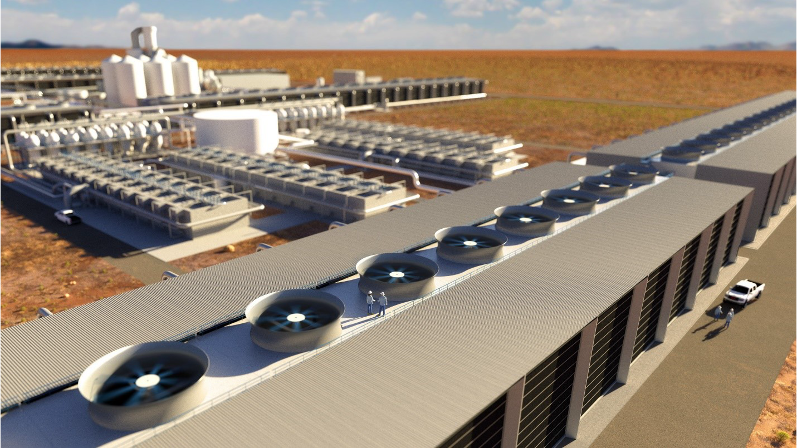
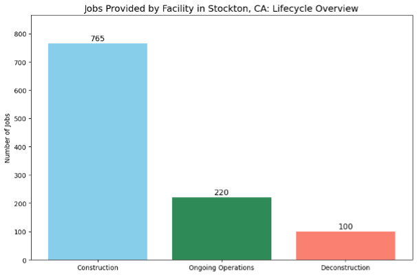
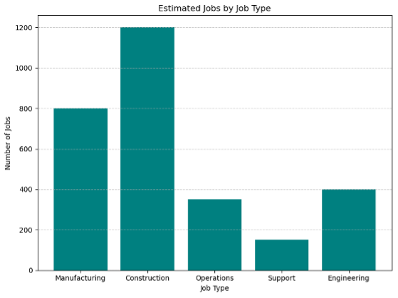
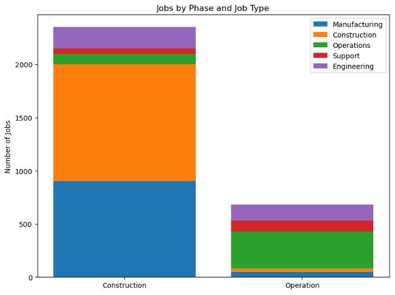

Click on a tab to see jobs data
During the different stages of the project, we project that 765 jobs will be created during construction, 220 jobs will be needed during the operation of the DAC facility, and 100 will be needed during deconstruction. This is a conservative estimate.

When considering types of jobs for this DACS facility, a maximum of 800 jobs may be needed in manufacturing, 1200 jobs may be needed in construction, 380 jobs may be needed in operations, 180 may be needed as support, and 400 jobs may be seen in engineering.

Over 10 years of the project, it can be noted that full operation will not start until after 5 years with 400 jobs present. During construction, from years 1-5 there will be a max of 1200 jobs with a decline to 0 jobs by year 6.

The types of jobs needed during the phases of the project are shown above. Notably the biggest differences between construction and operation are the changes in needed construction and manufacturing jobs.

During decommissioning, the jobs will decrease by 50 every year for 3 years with the most jobs needed within the first year of the facility’s decommission.